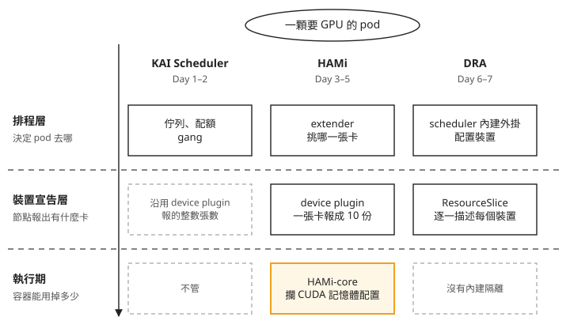
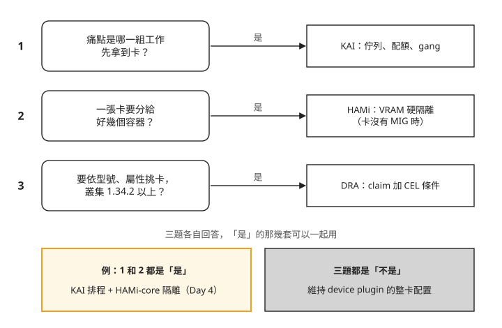
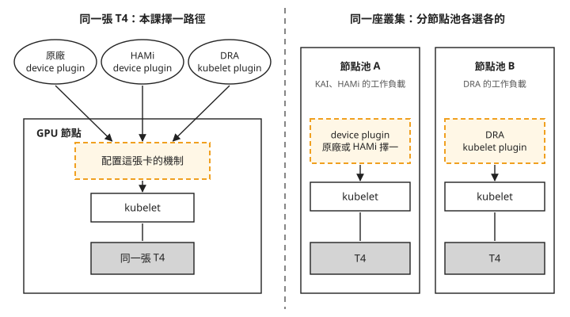

Day 8: Sprint 1 總結——KAI、HAMi、DRA 各管哪一層、怎麼選¶

假設同一週裡，同一座叢集收到三個需求。線上推論組抱怨，兩張 T4 常被離線批次工作佔滿，推論的 pod 進不來；另一組人有三個小模型，每個只要幾 GB 的 VRAM，想塞進同一張卡；採購那邊又說，下一批會進不同型號的卡，希望工作能指定「至少要多新的卡」。
這三個需求，前七天各有一套工具處理過：Day 1–2 的 KAI Scheduler、Day 3–5 的 HAMi、Day 6–7 的 DRA。這一章不開新的 lab，只把三套工具放在同一個問題前面比較。讀完之後，拿到一個 GPU 需求，你能說出該交給哪一套，也知道組合使用時怎麼避免重複配置同一批 GPU。
走完之後：三套工具管的是不同層¶
Day 1 開場的問題是「兩張 T4 被批次工作吃光，推論進不來，卡該怎麼分」。剛開始很容易把 KAI、HAMi、DRA 當成三個互相競爭的答案，好像只要挑出最好的一套就行。走完七天再回頭看，它們其實在處理一顆 GPU pod 的不同階段。
下面這張圖由上往下，是一顆要 GPU 的 pod 從送出到跑起來會經過的三層：
- 排程層：決定 pod 放到哪個節點、哪一組工作先拿到卡。
- 裝置宣告層：節點怎麼告訴 Kubernetes「我這裡有什麼卡、有幾張」。
- 執行期：容器跑起來之後，實際能用掉多少 VRAM。
三個欄位是三套工具，虛線框表示那一層它沒有處理。

我們可以從圖上看到兩件事：
- KAI 只管排程。 它決定誰先拿到卡、拿幾張，以及 gang scheduling：一組 pod 湊齊才一起排上，湊不齊就都不上。它也能按比例把一張卡分給好幾顆 pod（Day 4 的
gpu-memory寫法），但不做執行期隔離：容器實際吃掉多少 VRAM，它不管。 - 真正在容器裡擋住超額用量的，只有 HAMi 的執行期那一格。 DRA 雖然同時改寫了上面兩層：裝置用
resource.k8s.io這組 API 描述，配置由 kube-scheduler 內建的dynamicresources外掛完成，但它不碰執行期。兩顆 pod 共用一張卡時，各自能吃掉多少，DRA 不管。
組合使用時，要避免不同機制各自宣告、配置同一批 GPU，造成重複分配。這不代表所有裝置的 driver 都不能在同一個節點上共存；本課採用的配置方式留到後面說明。
回頭對照 Sprint 開始的時候：Day 0 能問的只有「叢集裡有沒有 GPU、pod 拿不拿得到卡」，卡是節點上的一個整數，拿到就是整張。現在同樣面對「卡不夠分」，你可以先分清楚問題出在哪一層：是誰先拿的排程問題、一張卡要不要切開的隔離問題，還是要描述哪一種卡的宣告問題，再決定交給哪一套。
真的要做的時候：三個問題¶
拿到一個 GPU 需求時，下面三個問題各問一次，大多數情況就能決定要用哪幾套。

我們可以從圖上看到，三個問題彼此獨立，每一題回答「是」，就對應一套工具，結果可以組合。最常見的情況是前兩題都回答「是」：既要分配誰先拿到卡，又要讓多個容器共用一張卡，於是 KAI 和 HAMi-core 一起用，Day 4 整天處理的就是這個組合。三題都回答「不是」，維持原本的整卡配置就好。接下來看各種需求的取捨。
推論和批次搶同一批卡：交給 KAI 的佇列與配額¶
這是開場的第一個需求，也是 Day 1 處理的問題。KAI 讓每個佇列有一份 quota（保底額度）：quota 內的卡誰都拿不走；別的佇列閒置時，可以借用超過 quota 的卡，但借來的隨時會被收回。
設計佇列時要注意：
- 想讓某個佇列拿到更多卡，要改 quota，不是改 priority。 佇列優先權只決定超額的卡先分給誰，對 quota 內的卡沒有作用。見 Day 1 的「queue priority 200 打不贏 quota 內的 100」。
-
把工作標成不可被搶占的等級，代價是只能用 quota 內的卡。 叢集裡明明還有一張卡在跑低優先權的工作，它也拿不到。見 Day 1 的「
priorityClassName: inference反而讓 pod 卡住」。 -
limit要明寫-1。-1表示可以在別人閒置時借用超過 quota 的卡；不寫等於 0，佇列就完全不能借用，對方閒著也一樣。
所以要保證服務不中斷，就用不可被搶占的等級，並把 quota 開到尖峰用量；要吞吐量，就用可被搶占的等級去借超額的卡，接受隨時被收回。
分散式訓練：同樣交給 KAI，用 gang¶
分散式訓練一次要好幾張卡，例如八個 worker 各一張。只拿到七張時，那七張卡什麼事都做不了，卻佔著別人的位置。開頭提過的 gang scheduling 就是處理這件事。
gang 的代價是整組一起上，被搶占時也整組一起下。即使搶占者只要一張卡，也可能驅逐整組工作，見 Day 2 的「搶 1 張卡，整個 gang 都被驅逐」。所以 gang 型的工作最好放進自己的佇列，並給足 quota。
gang 也不是裝了 KAI 就自動有。PodGroup 是 KAI 用來代表「一組 pod」的物件；一般的 batch/v1 Job 即使寫了 parallelism: 3，KAI 替它產生的 PodGroup 預設還是 minMember: 1，也就是一顆湊到就上。要 gang 就在 Job 上明寫 kai.scheduler/batch-min-member，設定方式見 Day 2 的「裝了 KAI、Job 寫了 parallelism: 3，卻沒有 gang」。
查詢前先從 Job manifest 的 metadata.namespace 確認 namespace，Day 2 使用的是 kai-lab。沿用該練習時先設定 NS=kai-lab；若用了其他名稱，就把 NS 設成該名稱。下方保留原指令，但 <ns> 不能直接貼入 shell，會被當成重新導向。正確寫法是 kubectl -n "$NS" get podgroups -o json | jq '.items[].spec.minMember'，修正後的寫法本課沒有實跑。
印出來是 1，就代表沒有 gang，不管 Job 寫了多少 parallelism。
如果訓練跑在 spot 節點（雲端廠商隨時可以收回的便宜 VM）上，還要再加三件事：
- 開 cluster autoscaler（依需求自動增減節點的元件）。spot 節點被收回之後，node pool 不會自己補回來，見 Day 2 的「spot 節點被收走後，pool 不會補回來」。
- 在回收預告期內寫完 checkpoint。 Azure 收回 spot VM 之前會先發一則通知，Day 2 量到從通知到 VM 被收走是 39 秒，訓練程式要在這段時間內把進度存下來。
- gang 大小留餘裕。 別讓
minMember剛好等於全部節點數，否則少了一台之後，重跑時連湊齊都湊不齊。
三個小模型共用一張卡：交給 HAMi¶
這是開場的第二個需求。先問一句：這批卡有沒有 MIG（Multi-Instance GPU）。MIG 是 A100、H100 這類資料中心卡內建的硬體分卡功能，可以把一張卡切成幾個互相隔離的執行個體，每個有自己專用的運算單元和記憶體，一個執行個體吃滿也影響不到別的。卡有 MIG，就先考慮用它。T4 和消費級顯示卡都沒有 MIG；沒有 MIG 時，要讓多個容器共用一張卡又不互相吃掉 VRAM，課程裡驗成的做法只有 HAMi。
HAMi 做兩件事：device plugin 把一張實體卡對外報成十份，讓多顆 pod 可以排上同一張卡；容器裡再放一個叫 libvgpu.so 的函式庫，在 CUDA 要記憶體時檢查有沒有超過這個容器的配額。即使實體卡還有空間，超過容器配額的配置仍會被拒絕，實測過程見 Day 3 的記憶體隔離實驗。
這個函式庫在 HAMi 專案裡叫 HAMi-core。Day 3 裝的是 HAMi 平台，也就是整套元件：改寫 pod 的 webhook、挑卡的排程器、device plugin，加上 HAMi-core。HAMi 的排程器是標準的 kube-scheduler 加一個 extender（一支外掛程式，內建排程器遇到 GPU 資源時，把選哪張卡的決定交給它）。Day 4 的 KAI 官方整合則只借用 HAMi-core，排程仍由 KAI 自己做。
選哪一條路，看叢集現況：
- 沒有排程器要沿用、只想塞得密，用 HAMi 平台。Day 4 的對照組，四顆各 4096 MiB 的 pod 剛好填滿一張 T4 的 16384 MiB。
- 已經在用 KAI 的佇列、想把分卡接進去，走官方整合。同樣四顆 pod 只塞得下三顆，因為 KAI 把 VRAM 換算成兩位小數的 GPU 比例，4096 MiB 進位成 0.26，容器實得 4259 MiB，一張卡只夠三份。見 Day 4 的「
gpu-memory換算成 GPU 比例後進位，每張卡少放一個 pod」。
少塞一個換來的是查帳方便：HAMi 平台把已經分出去多少 VRAM 記在 extender 的記憶體和 pod annotation 裡，KAI 路徑的數字則在一個 kubectl get cm 就查得到的 ConfigMap 裡。
同一批 GPU 要選定一條配置路徑，本課同時使用兩條路徑的結果在下一節。另外，不論哪一條，導入前都要先確認三件事：
- 容器的基底映像要用 glibc。 HAMi 會在它管的每個容器寫入
/etc/ld.so.preload，而libvgpu.so需要 glibc。用 musl 的 busybox 或 alpine，程式還沒開始就以 exit 127 結束，看起來像映像壞了。見 Day 3 的「busybox、alpine 映像一啟動就 exit 127」。 - 監控要看 annotation，不能只看 Running。 HAMi 的 webhook 設定是
failurePolicy: Ignore：webhook 掛掉時，pod 照樣建得起來，只是沒有配額限制，也沒有任何告警。要監控的是 pod 有沒有拿到hami.io/vgpu-devices-allocatedannotation。 - 配額要把 CUDA context 算進去。 程式第一次使用 GPU 時，CUDA 會替這個 process 在卡上建立一份執行環境，叫 CUDA context，它本身就要佔 VRAM，而 HAMi 算用量時會把它算進去。Day 3 從被拒絕時的數字推算，context 大約 100 MiB。那顆 4096 MiB 的容器只拿到 3584 MiB，主要原因是每次要 512 MiB 這個單位太大，下一塊放不進剩下的空間，不是 context 吃掉了 512 MiB。規劃配額時，在模型需要的量之外多留約 100–200 MiB 給 context。
如果叢集裡的卡 VRAM 大小不一，配額就不能用同一個數字套全部，要按卡型分別設計。HAMi 把每張卡的規格寫在節點 annotation 裡。先用 kubectl get nodes 查節點名稱，依 Day 3 設定的 gpu=on 標籤確認目標 GPU 節點，再用 GPU_NODE='查得的節點名稱' 儲存名稱；單引號內換成實際名稱。
下方保留原指令，但 <gpu-node> 不能直接貼入 shell。正確寫法是 kubectl get node "$GPU_NODE" -o json | jq -r '.metadata.annotations["hami.io/node-nvidia-register"]'，修正後的寫法本課沒有實跑。節點規格與 annotation 的對照見 Day 3。
輸出裡的 devmem 欄位就是那張卡的 VRAM。
新進不同型號的卡：新叢集可以從 DRA 開始¶
這是開場的第三個需求。用 device plugin 時，一張卡在 Kubernetes 眼裡只是節點上的一個整數，nvidia.com/gpu: 1。工作想要「至少 Turing 世代」的卡，只能先替節點貼標籤，再用 nodeSelector 繞過去。
DRA（Dynamic Resource Allocation）換掉了這個前提：節點用 ResourceSlice 逐一描述每個裝置的屬性；pod 透過 ResourceClaim 向 Kubernetes 請求符合條件的裝置，並可以用 CEL（Common Expression Language，一種寫判斷條件的小語言）寫篩選條件。
要依型號、架構、CUDA 計算能力或記憶體容量挑卡，可以從 Day 7 的 ResourceSlice 與選擇器 開始。條件要依 driver 實際報出的屬性與型別撰寫；例如 driverVersion 會正規化成 semver，不能直接拿 nvidia-smi 的版本字串比對，見 Day 7 的版本號說明。
DRA 也能讓多顆 pod 共用一個具名的 claim；各自用 template 請求裝置則會分開配置，寫法見 Day 6。不過共用裝置沒有各容器用量上限，DRA 不做執行期隔離。需求若包含 VRAM 隔離，光是共用 claim 還不夠。
DRA 的缺口也要一起考慮：
- 節點上看不到裝置。 持卡的 pod 在
kubectl describe node上每一欄都是0 (0%)，所有讀節點 allocatable 的儀表板與容量工具都看不到 DRA 的裝置（Day 6 的「節點上看不到 DRA 的裝置，describe node顯示0 (0%)」）。用 template 產生的 claim 在 pod 結束時就被刪掉，事後查不到它拿過哪一個裝置（Day 7 的「Job 跑完之後查不到它用過哪張卡」）。要留紀錄，得在 pod 還活著時抓，或把裝置 UUID 印進容器 log。 - 排不上時的訊息很少。 事件只寫
cannot allocate all claims，不說是哪個 claim、哪條條件、篩掉幾個裝置。CEL 打錯字和裝置真的不夠，訊息一模一樣（Day 6 的「cannot allocate all claims不說是哪個 claim、哪條條件」）。 - 廠商的 driver 還早。 DRA 的核心 API 已經是 Kubernetes 的穩定功能，但 NVIDIA 的 DRA driver 還在 v0.4.x，而它的 chart 預設叢集裡已經有 GPU Operator 或 NFD（Node Feature Discovery，自動替節點貼硬體標籤的元件）。
所以 DRA 適合版本已經在 1.34.2 以上、還沒有既有 GPU 工作負載的新叢集。DRA 的核心 API 在 Kubernetes 1.34 成為正式功能，NVIDIA 的 DRA driver 則要求 1.34.2 以上，要用真卡就以後者為準。已經用 device plugin 跑得好好的叢集，維持整卡配置就好。
三套放在一起看¶
把上面幾節的結論併成一張表，表上的版本是這門課用的版本：
| KAI Scheduler v0.16.8 | HAMi v2.9.0 | DRA（K8s 1.35.6） | |
|---|---|---|---|
| 解決的問題 | 哪一組工作先拿到卡、被收回時收誰 | 一張卡分給多個容器 | 描述裝置的差異，讓工作挑裝置 |
| 要卡的寫法 | 整數張數，或用 gpu-memory 要一部分 |
MiB | claim 加 CEL 條件 |
| 分卡 | 按比例分配 | 有 | 本課只驗到整張卡 |
| 執行期隔離 | 沒有（可借用 HAMi-core） | 有 | 沒有 |
| 已分配的量記在哪裡 | ConfigMap 與 metrics | extender 記憶體與 pod annotation | ResourceSlice 與 ResourceClaim |
kubectl describe node 看到什麼 |
張數 | 切了幾份，看不到 VRAM 餘額 | 什麼都看不到 |
| 專案狀態（截至 2026-08） | CNCF sandbox | CNCF incubating | Kubernetes 內建的穩定功能 |
同一批 GPU 不要交給互不協調的配置機制¶
三套工具裝在同一座叢集時，會不會互相干擾？答案要分成節點和叢集兩個範圍來看。
device plugin 與 DRA driver 都能把 GPU 提供給工作負載，但它們各自記錄已分配的裝置，不會自動同步。同一張卡若同時被兩套機制宣告為可用，就可能重複分配。這裡要避免的是兩套機制爭用同一批 GPU，不是禁止一台節點安裝多種裝置的 driver。下圖左邊限定同一張 T4，右邊是本課分節點池的做法：

我們可以從圖上看到兩件事：
- 同一批 GPU，本課選擇一條配置路徑。 Day 4 在同一個節點上同時留著 HAMi 平台和 KAI 整合，HAMi 的 pod 正常 Running，KAI 的 pod 則停在 Pending，佔位 pod 出現
UnexpectedAdmissionError，見 Day 4 的「兩套方案同時裝著，KAI 的 pod 無限重排」。NVIDIA DRA driver 的 chart 預設會在helm template階段回報錯誤，提醒 DRA 與原廠 device plugin 可能重複配置 GPU；本課先確定 DRA 節點上沒有原廠 device plugin，才設gpuResourcesEnabledOverride=true打開 GPU 功能。本課沒有把這兩者放在同一個節點上跑過。 - 分節點池，讓兩套機制管理不同的卡。 本課用不同標籤把 DRA 與 device plugin 隔開，三套工具可以在同一座叢集裡並存。這是本課採用的隔離方式，不是 Kubernetes 對所有 driver 的同節點限制。
下面是課程裡實際跑過的組合（DRA driver 和原廠 device plugin 同節點的情況沒有跑過，不列在表上）：
| 組合 | 在同一個節點上 | 結果 |
|---|---|---|
| KAI + HAMi 平台 | 是 | HAMi 正常執行，KAI Pending，佔位 pod 配置失敗 |
| KAI + HAMi-core（搭原廠 device plugin） | 是 | 正常運作 |
| DRA 在獨立節點池，KAI 與 HAMi 留在原本的池 | 否 | 互不干擾 |
不要求 GPU 的 pod 也可以交給 KAI。是否由 KAI 排程，要看 pod 是否指定 schedulerName: kai-scheduler，並用 kai.scheduler/queue 標籤指向佇列；KAI 官方 quickstart 有 CPU-only 範例。這是文件說明，本課沒有另做 CPU-only 實驗。
所以想在一座正在用的叢集裡試新的機制，開一個貼不同標籤的節點池來試，比在既有節點上疊裝安全得多。
導入既有叢集前，先查什麼¶
前面的結論都來自 AKS 上的兩張 T4，用的是上表那幾個版本。要把它們用到一座已經在運作、版本可能比較舊的叢集，先查下面幾件事。
DRA 需要的版本。 舊版叢集可能連 resource.k8s.io 這組 API 都沒有。DRA 的核心 API 在 Kubernetes 1.34 成為正式功能，NVIDIA DRA driver 的官方前置條件則是 v1.34.2 以上。叢集還沒升到 1.34.2 之前，DRA 只能先規劃，要練習可以另外開一座版本夠新的測試叢集。
已經裝著的 KAI 是哪一版。 本課程的行為都是 KAI v0.16.8 的行為。連 chart 版本字串帶不帶 v 這種小地方，都會讓安裝指令抓不到 chart（Day 1 的「--version 0.16.8 抓不到 chart」）。先用兩道唯讀查詢，查出叢集上那套 KAI 的實際版本與設定，再決定要不要對齊：
helm list -A -o json | jq -r '.[] | select(.chart | test("kai")) | "\(.name) \(.chart) \(.app_version)"'
kubectl get configs.kai.scheduler -A -o yaml # operator 實際套用的設定,不是 values 檔
第二行查的是 KAI operator 實際在用的設定。KAI 是 operator 架構，真正的元件由 operator 依這份設定產生，所以要看這裡，不是看當初安裝用的 values 檔。
平台有哪些功能、少了哪些物件。 下面兩行應該在安裝前跑，不要等裝壞了才查：
kubectl get --raw /metrics | grep kubernetes_feature_enabled | grep -i DRA # DRA 能做到哪裡
kubectl get runtimeclass # chart 預設要的那個存不存在
第一行列出 API server 上 DRA 相關的功能開關。AKS 不開放改控制面的功能開關，DRA 的 alpha 功能全部關著，第一行就能看出哪些用不到。其中影響最大的是 DRAExtendedResource：NVIDIA DRA driver 的 chart 會在 DeviceClass 上寫 extendedResourceName: nvidia.com/gpu，讓 resources.limits: nvidia.com/gpu: 1 這種舊寫法也能由 DRA 配卡。這個開關在 AKS 上是關的，API server 會把這個欄位直接剝掉，不報錯也不警告，結果是舊寫法和 DRA 的新寫法沒辦法在同一批卡上並行（Day 7 的「舊寫法 nvidia.com/gpu: 1 的 pod 一直 Pending」）。第二行查 RuntimeClass（指定容器用哪一種 runtime 執行的物件）。AKS 的 GPU 節點沒有 nvidia 這個 RuntimeClass，KAI 的共卡設定卻預設要它，pod 會在 API server 就被擋下（Day 4 的「KAI 替共卡 pod 指定 RuntimeClass "nvidia"，AKS 沒有，pod 建不出來」）。
chart 對平台的假設。 Day 7 卡住的事情幾乎都不是硬體問題，而是 chart 預設叢集裡已經有 GPU Operator 或 NFD 幫忙認出 GPU 節點；AKS 兩者都沒有，標籤得自己補（Day 7 的「helm 說 deployed，kubelet plugin 的 DaemonSet 卻是 DESIRED 0」）。DRA driver 的 driver root 路徑也依平台而不同：AKS 是預設的 /，GKE 要改成 /home/kubernetes/bin/nvidia，由 GPU Operator 管理的環境則是 /run/nvidia/driver。同一份 values 檔換一個平台，可能完全裝不起來。
節點標籤下在節點池層級。 在 AKS 上，spot 節點被收回、或節點池縮到 0 再重新擴增，拿到的都是全新的 VM，用 kubectl label nodes 貼在單一節點上的標籤會跟著消失。HAMi、KAI 和 DRA driver 要的節點標籤，都要設在節點池上（Day 3 補 HAMi 節點標籤那一步）。
HAMi 的排程器映像從哪裡拉。 HAMi chart 的 kube-scheduler 映像預設指向阿里雲的 registry，tag 由叢集的 Kubernetes 版本推導出來，這個 registry 不保證跟得上最新的版本。安裝前先確認那個 tag 存在；網路受限或有映像來源政策的環境，要改成自己的 registry（Day 3 安裝 HAMi 那一步）。
疑難排解¶
這一節收的是好幾章都出現過的兩種狀況。
自行修改設定後，DaemonSet 的 DESIRED 變成 0¶
helm install --wait 會等待資源達到就緒條件。要另外確認的是部署範圍：DaemonSet 的 DESIRED 是 0 時，沒有預期要啟動的 pod，仍可能通過等待檢查。
Day 7 提供的 values 已用 kubeletPlugin.affinity: null 移除 chart 預設 affinity，再用節點標籤選擇部署位置。自行調整時若改成 affinity: {}，Helm 合併設定後會保留預設 affinity；節點缺少對應標籤，就可能出現 DESIRED 0。Day 7 紀錄中的修正讓 DESIRED 從 0 變成 1，之後 pod 成為 Running，設定方式見 Day 7 的安裝與狀態確認。
修改 affinity 或 nodeSelector 後，對照節點標籤，確認 DESIRED 等於預期符合條件的節點數，再檢查 READY。這是在核對部署範圍，不能把就緒檢查概括成只表示指令執行完畢。
畫面上的數字是 0，或跟實際用量對不上¶
決定「還能不能再排一顆」的那份紀錄，通常不在 kubectl describe node 上：HAMi 的 VRAM 餘額在 extender 的記憶體和 pod annotation 裡，DRA 的裝置則完全不在節點的資源裡。連「一張卡」的意思，各系統都不一樣：原廠 device plugin 說 1，HAMi 說 10，Day 4 的 KAI 透過 HAMi 的 device plugin 看兩張實體卡，算出來是 20 張。
看到一個數字時，先問它是從哪一份紀錄算出來的。看到 0 時，先分清楚是真的沒人在用，還是資料沒有送到；這兩種情況在畫面上看起來一樣，Day 5 的「每顆 pod 的用量永遠是 0,標籤被加上了 exported_ 前綴」就是後者。
這門課沒教的¶
MIG 和單機多卡。 T4 沒有 MIG，課程裡每台機器也只有一張卡，所以 MIG 分卡、同一台機器上多張卡的拓樸，以及 NUMA（多 CPU 插槽的機器上，記憶體和裝置靠近哪一顆 CPU 的差別）都驗不到。HAMi 的 numa-first 放置政策在 v2.9.0 也還沒實作。想往下學，MIG 從 NVIDIA 的 MIG User Guide 開始；Kubernetes 怎麼讓 CPU 與裝置對齊同一個 NUMA 節點，看官方文件的 Topology Manager。
DRA 還在 alpha 的功能。 partitionable devices（把一張卡切成多個裝置）、consumable capacity（多個 claim 依容量分用同一個裝置），以及直接用 resources.limits 要 DRA 裝置，都需要打開 alpha 功能開關，AKS 不開放，所以課程沒有做。各功能在哪個版本、什麼階段，看 Kubernetes 官方部落格的 Kubernetes v1.34: DRA has graduated to GA；要實際試，需要能自己設定功能開關的叢集，例如 kubeadm 架的叢集。
MPS。 Day 7 只送過 time-slicing 的設定，從容器裡看不出差別；NVIDIA MPS 需要在節點上另外跑一個背景程式，課程沒有做。運作方式和限制見 NVIDIA 的 Multi-Process Service 文件。
KAI 和 HAMi 的其他分卡功能。 KAI 沒測 gpu-fraction 寫法，也沒測 HAMi-core 整合下的搶占與 gang，起點是 KAI 的 GPU sharing 文件（v0.16.8）。HAMi 沒驗算力切分 nvidia.com/gpucores 的實際精度、VRAM 超賣，以及不同 VRAM 的卡混在一起時的配額行為，這些設定寫在 HAMi 的 GPU virtualization 文件裡。
想一想¶
- 一個團隊說：「我們有四張 A100，想讓十幾個做實驗的人各分一小塊來跑 notebook。」你會先問他們哪一個問題？答案會怎麼影響你選 HAMi 還是別的做法？
- 一座叢集已經用 HAMi 平台分卡一年，現在想導入 KAI 的佇列，讓推論和訓練各有保底額度。你會直接在現有節點上裝 KAI 的 HAMi-core 整合嗎？如果不會，你會怎麼安排？
- 監控畫面顯示某個 namespace 還佔著 8 GB 的 VRAM，但那個 namespace 裡已經沒有任何 pod。你會先去哪裡查，才能確定這個數字是真的？
小結¶
KAI、HAMi、DRA 不是三選一的競品，而是管一顆 GPU pod 的不同層：KAI 決定哪一組工作先拿到卡、湊不齊要不要一起等；HAMi 讓多個容器共用一張卡，並在執行期擋住超額的 VRAM；DRA 讓卡從一個整數變成可以描述、篩選、共用的裝置。組合時要確認誰負責配置同一批 GPU，避免各自記帳造成重複分配；本課用分節點池的方式讓 DRA 與 device plugin 管理不同的卡。之後遇到 GPU 需求時，先問痛點是誰先拿到卡、一張卡要不要分、叢集版本夠不夠新。裝好之後，用 kubectl 自己確認元件真的在跑，查用量時也先弄清楚那個數字來自哪一份紀錄。
延伸閱讀¶
想再深入，可以從這幾份開始：
- Dynamic Resource Allocation | Kubernetes —— DeviceClass、ResourceClaim、ResourceSlice 的官方定義，以及 CEL 篩選與裝置共享的說明；還在 alpha 的功能也列在這裡。
- HAMi 官方的 KAI Scheduler 整合指南 ——（HAMi 文件站僅 next 版本收錄此頁，對應版本路徑不存在，截至 2026-08）官方說明這個整合用的是 HAMi-core 而不是整套 HAMi 平台，以及
gpu-memoryannotation 的寫法和比例換算的警告。 - DRA Driver for NVIDIA GPUs 的前置條件 —— Kubernetes 版本下限、driver 版本、CDI、NFD，以及各平台的 driver root 路徑。
- KAI Scheduler 的 CNCF 專案頁 —— 進入 sandbox 的日期與社群活躍度資料。
- HAMi 成為 CNCF incubating 專案 —— TOC 通過的公告與專案定位說明，和上一條一起看，可以比較兩個專案的成熟度。
下一步¶
Sprint 1 到這裡結束。導入前，先確認 Kubernetes、KAI、HAMi 與 DRA driver 的版本是否符合所選功能的條件，節點標籤是否對得上 chart 的部署設定，RuntimeClass 是否存在，以及 driver root 是否符合平台的安裝路徑。需要 VRAM 隔離時，再依 Day 3 的方法測試超額配置是否被拒絕、同卡其他容器是否受影響，確認目標環境的行為。
下一個 sprint 往更底層走：卡分好了、工作也跑起來之後，要怎麼知道它們在節點上實際做了什麼？Sprint 2 從 eBPF 和執行期安全開始。
Kubernetes 標誌為 CNCF 之官方資產,此處作社群教學用途。